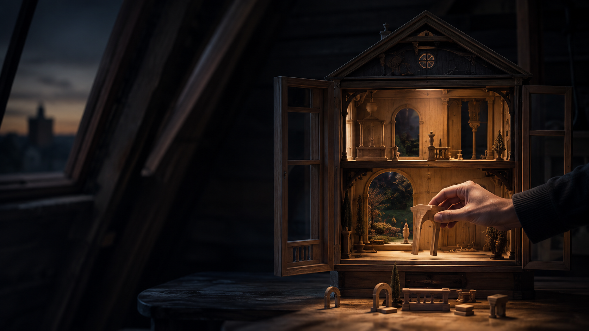

株式会社ドールハウス・エンターテインメント
人が輝く
「舞台」をつくる。
会社も、一つの舞台。
劇場も、一つの舞台。
そこで主役になるのは、「人」です。
私たちは、企業で人を育て、
舞台で人を輝かせてきました。
ABOUT US
ドールハウス・
エンターテインメントとは？
私たちが30年以上、
向き合ってきたもの。
それは、「人」です。
企業の中で、人を育てる。舞台の上で、人を輝かせる。一見まったく違う二つの世界ですが、私たちにとって本質は同じです。
人には、本人さえまだ気づいていない可能性があります。その可能性を見つけ、育て、輝く場所をつくる。それが、株式会社ドールハウス・エンターテインメントです。
育てる
輝かせる
ORIGIN
社名と、はじまりの物語
01
社名に込めた想い
ヨーロッパの子どもたちが屋根裏部屋で遊ぶドールハウス。小さな家に何を置くかを決めるのは、いつも本人です。一人ひとりが自分自身の箱庭に、成長に必要なパーツを自らの責任で集めていく。その願いを込めて、株式会社ドールハウス・エンターテインメントと名付けました。
私たちの仕事は、箱庭を代わりにつくることではありません。一人ひとりが自分に必要なものへ気づき、自ら成長していける舞台をつくることです。

02
創業ストーリー
はじまりは、二人の青年でした。人財育成の会社を経営していた頃、一人の歌手と、一人のダンサーに出会いました。二人との対話から見えてきたのは、才能の形が一人ひとり違う以上、その人に合った育成と、力を発揮できる舞台が必要だということでした。
それは、企業の中で人財を育ててきた仕事と同じでした。この二人の青年との出会いから、ドールハウス・エンターテインメントは始まりました。
BUSINESS
事業案内
私たちには、二つの舞台があります。
舞台が違っても、向き合っているものは同じです。
どちらも、主役は「人」です。
人が輝く、二つの舞台
Business 01
社員教育Lab. 会社という舞台で、人を育てる。主役は「人」
Business 02
劇団 天-TEN- 本物の舞台で、人を輝かせる。主役は「人」
Related Business
広告・PR支援 二つの舞台で生まれた価値を、社会へ届ける。
BUSINESS 01
社員教育Lab.
会社という舞台で、人を育てる。
経営者の理念・事業計画・組織課題から逆算し、「誰を、何のために、どこまで育てるのか」を設計します。既製の研修を提供するのではなく、その会社のための教育を一からつくる社員教育事業です。
詳しく見る
EDUCATION LAB.
社員教育Lab.
会社という舞台で、人を育てる。
ここからは、年商5,000万円を超え、
次の成長を目指す
経営者の皆様へお話しします。
FOR EXECUTIVES
経営者の皆様へ
年商5,000万円を超えたとき、
次に育てるべきは
「売上」ではなく、
「人」かもしれない。
社長一人が頑張る会社から、
人と組織が成長をつくる会社へ。
社長のほかに、貴社という舞台で主演をはれる存在はいますか？
それは、社員だけの
問題ではないかもしれません。
任せる役割が決まっているか。判断の基準が示されているか。会社が目指す未来を社員と共有できているか。これらが曖昧なままでは、社員は自ら判断しようにも動けません。社員を変える前に、会社として何を担ってほしいのか、どこへ向かうのかを設計する必要があります。
METHOD
会社の未来から、
人の育て方を設計する。
教育を選ぶ前に、経営の未来を伺う。
社員教育Lab.の設計は、
そこから始まります。
POINT 01
私たちは、研修を売りません。
社員教育Lab.は、既製の研修を選んでいただく会社ではありません。貴社の未来から、その会社だけの教育を設計する教育プロデュース会社です。
POINT 02
教育は、未来から逆算する。
売上目標、事業計画、組織体制、経営理念を伺い、「誰を、いつまでに、どこまで育てるのか」を経営者とともに設計します。教育内容を決めるのは、そのあとです。
POINT 03
育てるのは、社長の分身ではありません。
理念と判断基準を受け継ぎ、自ら考え、役割を担い、会社の未来を前へ進める人財を育てます。
未来から現在の教育設計へ
Future / 01
売上目標・事業計画組織体制・経営理念 数年後、会社がどこへ向かうのかを伺います。
People / 02
必要な人財像担う役割 その未来に、誰がどの役割を担うのかを定めます。
Current / 03
教育の設計実践・検証・改善 いま何を育てるべきかが、ここで決まります。
WORKS
人と組織に
向き合い続けてきた実績
一社一社、一人ひとりとの対話を積み重ねてきました。
30年以上
人財育成・教育事業に携わってきた年数
6,976社
導入企業社数
29,678名
社員教育訓練生
※1994年の営業・人財育成事業創業以降、社員教育Lab.発足以前を含む、田中秀明の人財育成・教育事業における累計実績です。
掲載許可企業・団体
- トヨタグループ
- 株式会社中京テレビサービス
- 株式会社琥珀
- 株式会社レーシングワールド
- 日本テレビ放送網
- 株式会社リクルート
- 株式会社電通名鉄コミュニケーションズ
- 株式会社中日広告センター
- 大手テーマパーク
- アサヒビール株式会社
- 大東建託株式会社
- 株式会社ヤナセ
- 名古屋商工会
- 他多数
REASON
作家×
プロデューサー×演出家
会社の本質を言葉にし、
人の成長を設計し、
行動へつなげる。
REASON 01
作家として
社長の頭の中にある理念・哲学・想いを、社員が日々の判断と行動に使える言葉へ変えます。
REASON 02
プロデューサーとして
会社の未来から、必要な人財と成長プロセスを設計します。何年後に、誰が、どの役割を担うべきか。その道筋を描きます。
REASON 03
演出家として
理解させるだけではなく、本人が実際に動けるところまで伴走します。「分かった」で終わらせず、「やれた」へつなげます。

主役は、講師ではありません。
会社も舞台も、主役はそこに立つ「人」です。講師は、訓練生が会社という舞台で力を発揮できるよう支える、プロデューサーであり、演出家であり、伴走者です。だから社員教育Lab.は、「研修を受けて終わり」ではありません。
PHILOSOPHY
啐啄同時
内側の力と、外側の支えが、
同時に働くとき。
雛が内側から殻をつつき、親鳥が外側から応える。そのタイミングが合ったとき、新しい命が生まれます。人財育成も、社員を預けて終わるものではありません。経営者が変わる。社員・訓練生が変わる。教育者も本気で向き合う。三者が同じ未来へ向かい、同時に殻を破る。それが、社員教育Lab.の「啐啄同時」です。
三者が同じ未来へ向かうとき
Outside
経営者 会社の未来を示し、育てる覚悟を決める。Inside
訓練生 内側から殻をつつき、自ら変わろうとする。Outside
講師 外側から応え、動けるところまで伴走する。
Sottaku Doji
同時に、殻を破る。
余命一年、
今日と同じ働き方を
していますか？
人にも、会社にも、使える時間には限りがあります。だからこそ、教育を先送りにせず、今日から人と組織の未来をつくる。社員教育Lab.は、その一歩を経営者とともに設計します。
ISSUE
貴社は、いま
何に困っていますか？
ここにあるのは、既製の商品を選ぶための一覧ではありません。先に経営課題があり、その解決手段として最適な教育を設計します。
ISSUE 01
社長依存から抜けたい
貴社オリジナル訓練／教育顧問・継続支援
社長の判断基準を言語化し、幹部が自ら判断できる状態を目指します。
ISSUE 02
次世代経営者を育てたい
プロビジネスパーソン育成プログラム／知覧訓練
後継者・幹部が役割と責任を引き受けられるよう、実践を通して育成します。
ISSUE 03
営業組織を強くしたい
孫子の兵法体験型 実践セールス Boot Camp／グループ研修
個人の経験に依存している営業を、チームで共有・実践できる力へ変えます。
ISSUE 04
理念を社員へ浸透させたい
貴社オリジナル訓練／貴社アカデミー構築
理念を、社員が日々の判断と行動に使える言葉へ落とし込みます。
ISSUE 05
会社独自の教育文化を残したい
貴社アカデミー構築
自社で人が育ち続ける教育体系と運営体制を、会社に残します。
複数当てはまる、または選び方が分からない場合は、課題の整理からご一緒します。
SERVICE
サービス詳細
SERVICE 01貴社オリジナル訓練
（完全オーダーメイド）貴社が目指す未来に、貴社だけの訓練を。
業種、顧客、組織文化、現場の状況、目指す未来は企業ごとに異なります。だからこそ、貴社の未来から逆算した、貴社だけの教育を設計します。経営者への取材から、理念、経営目標、組織文化、現場課題を深く理解し、目指す成果と連動した実践型プログラムをゼロから設計します。約6か月にわたり、対面訓練、個別課題、現場実践、フィードバック、成果測定を繰り返し、社員の行動変容と組織課題の改善まで伴走します。
得られる変化
教育を経営目標へ結びつけ、社員の行動変容と組織の変化を確認しながら、成果へ向けた改善を続けられます。
- 対象
- 固有の経営課題・組織課題・人財育成課題に向き合いたい企業
- 期間
- 6か月〜 対面訓練6回＋個別課題を基本に個別設計
- 実施形式
- 集合研修＋現場課題 対面・オンライン対応
- 定員
- 最大14名／1クラス ※内容により調整
- 参考価格
- 150万円〜500万円 ※内容・人数・期間により個別見積
SERVICE 02教育顧問・継続支援・
ハラスメント対策室
（パートナー契約）教育を、単発の研修で終わらせない。
企業の成長フェーズに合わせ、教育戦略、研修設計、次世代リーダー育成、理念・文化の浸透、事業承継、組織開発、社員相談までを継続的に支援します。経営者と目標を共有する外部パートナーとして、人と組織の変化を定期的に確認し、必要な施策を更新します。研修プログラムを受講する契約ではなく、教育・組織課題を継続的に相談し、改善するための顧問契約です。
教育顧問
- 教育戦略の立案・実行支援
- 研修・育成プログラムの設計
- 管理職・次世代リーダーの育成
- 学び続ける組織風土の醸成
継続支援
- 経営理念・企業文化の言語化と浸透
- 事業承継・次世代経営の仕組みづくり
- 組織開発・人事体制の改善
- 経営者相談・社員面談
- 継続的な実施状況の確認と改善
ハラスメント対策室
安心して声を上げられる相談体制を整え、問題の深刻化を防ぎます。契約内容と企業規模に応じて、予防、相談対応、発生時の対応、再発防止までを支援します。
- 相談窓口の設計・周知・運用支援
- 外部相談員による中立的な一次相談対応
- 予防研修・啓発プログラム
- 相談・発生時の対応フロー整備
- 再発防止に向けた体制改善
- 必要に応じた労働局・弁護士等との連携
- 相談者・関係者のプライバシーに配慮した運用
得られる変化
社内だけでは抱えにくい教育・組織・職場環境の課題を継続的に整理し、人が育ち、安心して働ける持続可能な組織づくりを進められます。
- 対象
- 経営者・人事責任者 教育制度・事業承継・組織・職場環境を継続的に改善したい企業
- 契約期間
- 最低6か月〜
- 実施形式
- 訪問・オンライン対応
- 参考価格
- 月額30万円〜50万円 ※顧問料一式。支援範囲・企業規模・ハラスメント相談体制の内容により個別設計
SERVICE 03プロビジネスパーソン育成プログラム才能を磨き、個性を成果へ。
演出家・プロデューサーが、タレントの個性を見極め、魅力を磨き、舞台で輝かせてきた育成手法をビジネスへ応用します。一人ひとりの強み、経験、価値観、課題を掘り下げ、役割、目標、行動を設計します。実践と個別フィードバックを重ね、自分らしいリーダーシップと、成果を生み出す行動習慣を身につけます。組織全体ではなく、経営者・後継者・幹部など「一人の成長」に焦点を当てるプログラムです。
得られる変化
自分の強みと果たすべき役割が明確になり、意思決定、表現力、リーダーシップ、目標達成力が高まります。
- 対象
- 経営者・後継者・幹部・起業家・次世代リーダー
- 期間
- 1日コースまたは7日間合宿コース
- 研修時間
- 6時間／1日
- 実施形式
- マンツーマン 対面・オンライン対応
- 参考価格
- 38,500円（税込）〜／1回
SERVICE 04知覧訓練感謝を気づきへ。気づきを覚悟へ。覚悟を実践へ。
知覧に残る特攻隊員の手紙や記録、彼らを見送った鳥濱トメさんの想いに触れ、命・家族・使命と向き合う7日間です。知識を得るだけの講義ではなく、現地での体験、対話、実践を通じて、自分は何のために働き、組織で何を担うのかを言語化します。感謝を行動へ変え、困難から逃げずに決断する覚悟と、会社の未来を担う責任感を育てます。
得られる変化
- 家族・仲間・命の尊さへの気づき
- 感謝を行動へ変える力
- 使命感と責任感
- 困難に立ち向かう覚悟
- チームの結束と一体感
- 対象
- 経営者・幹部・後継者・次世代リーダー
- 期間
- 6泊7日
- 実施場所
- 鹿児島県南九州市・知覧
- 定員
- 最大14名／1グループ
- 参考価格
- 330,000円（税込）〜／1名
SERVICE 05孫子の兵法体験型
実践セールス Boot Camp戦わずして勝つ。その極意を、営業の現場で使いこなす。
『孫子の兵法』13篇にある戦略の知恵を、市場・顧客分析、営業戦略、提案、交渉、チーム営業へ応用します。体感型演習、チーム戦略、振り返り、フィードバックを繰り返し、「知っている戦略」を「成果を生み出す行動」へ変えるプログラムです。個人の勘や根性だけに頼らず、顧客から選ばれ、組織で成果を再現できる営業力を鍛えます。
得られる変化
- 営業戦略を立案し、実行する力
- 顧客から選ばれる提案力・交渉力
- チームの成果を最大化するリーダーシップ
- 継続的に成果を生み出す営業の仕組み
- 対象
- 経営者・営業責任者・営業リーダー・トップセールス・次世代リーダー
- 期間
- 6泊7日
- 実施場所
- 鹿児島県南九州市・知覧
- 定員
- 最大14名／1グループ
- 参考価格
- 330,000円（税込）〜／1名
SERVICE 06グループ研修
（企業内研修・公開講座）集合でしか生まれない気づきと成長を、組織の力へ。
カッツ理論を基に、役職・階層ごとに必要な「本質を捉え戦略を描く力」「人を理解し組織を動かす力」「実務をやり切る力」を、体験、対話、ワーク、ロールプレイで磨きます。講義を聞いて終わるのではなく、参加者同士の気づきと個別フィードバックを、組織の共通言語と現場で使える行動へ変える実践型の集合研修です。一社固有の課題を長期的に扱う「貴社オリジナル訓練」に対し、本研修は階層・職種・テーマごとに必要な力を、チームで身につけるプログラムです。
得られる変化
階層や役割に必要な能力が明確になり、参加者一人ひとりの成長を、チームの共通言語と行動へつなげます。
- 対象
- 全社員・管理職・中堅社員・営業職・リーダー候補・部門単位
- 研修時間
- 6時間／1回 ※企業内研修は、内容により5回以上を基本に個別設計
- 実施形式
- 企業内研修・公開講座 対面・オンライン対応
- 定員
- 最大14名／1グループ
- 参考価格
- 330,000円（税込）〜／6時間
PREMIUM
研修ではなく、
「教育資産」をつくる。
貴社アカデミー構築（企業内大学設立プログラム）
社長の知恵を、会社に残る
「人を育てる資産」へ。
貴社アカデミーの初代総長は、社長、あなたです。会社の歴史、理念、判断基準、成功と失敗、経営・営業ノウハウを取材し、貴社独自の教育体系へ変えます。社長が総長を務め、採用、教育、配属後の戦力化、次世代リーダー育成、事業承継までを一つにつなぐ企業内大学を構築します。外部研修に頼り続けるのではなく、自社で人が育ち続ける仕組みを会社に残します。特定課題を解決する研修ではなく、会社全体の人財育成基盤をつくる最上位プログラムです。社長が現場を離れたあとも、社長の判断基準で人が育つ。それが、この事業のゴールです。
貴社アカデミーで構築するもの
- 会社の歴史・理念・判断基準・成功と失敗の言語化
- 貴社専用の教育カリキュラム
- 社員教育マニュアル・研修教材
- 社内講師の育成と運営体制
- 採用・教育・配属後支援の仕組み
- 次世代リーダー・後継者育成プログラム
- 契約内容に応じた社員相談・職場環境支援
Corporate Academy貴社だけの教育体系で、
採用から事業承継までを一つにつなぐ。
01
採用02
教育03
配属後の
戦力化04
次世代
リーダー育成05
事業承継
会社に残るもの
教育カリキュラム、教材、社内講師、運営体制、企業文化、判断基準が、貴社だけの財産として残ります。創業から今日までに培った知恵を、次世代へ受け継げる「人を育てる資産」へ変えます。
- 対象
- 社員教育の仕組み化、理念継承、後継者育成、事業承継を進めたい企業
- 期間目安
- 構築・育成・定着の3段階で個別設計 ※内容・企業規模により期間は変動します
- 実施形式
- 経営者取材／教育体系設計／教材制作／社内講師育成／運用支援
- 参考価格
- 300万円〜1,000万円 ※内容・期間・企業規模により個別見積
VOICE
受講者・経営者の声
人と組織に起きた変化。
VOICE 01
社員を変える前に、
経営者自身が変わる。
会社を成長させるためには、まず経営者自身が学び、変わる必要があると考え、訓練へ参加しました。その後、管理職や幹部社員への教育を進めたことで、担当部署だけでなく、会社全体の未来を考えるリーダーが育ちました。
サービス業 F社 代表取締役VOICE 02
指示を待つ社員が、
自ら考える社員へ変わった。
会社の成長に伴い、人を育てることが大きな課題になっていました。役員、管理職、若手社員へ段階的に教育を行った結果、指示された以上のことを考え、会社全体を良くするために動く社員が育ちました。人として信頼される社員の存在が、企業の大きな財産になっています。
建設業 S建設 代表取締役VOICE 03
世代間の対立が、
組織の一体感へ変わった。
27歳で突然会社を継ぎ、ベテラン社員と若手社員の対立に悩んでいました。会社の歴史、理念、課題をもとに設計された6か月間のオリジナル訓練を通じて、社員同士の関係と行動が少しずつ変化しました。現在も、人を育て組織を変えるという考え方が、経営の軸になっています。
製造業 Y工業 代表取締役VOICE 04
自分の甘さと向き合い、
覚悟を決めた3日間。
社員へ厳しい言葉を伝えながら、自分自身がその言葉を実践できていないことに気づきました。訓練の中で指揮官を任され、仲間と最後まで課題をやり切った経験から、成果を阻むものは能力ではなく、自分自身の甘さであると学びました。
飲食業 D社 代表取締役VOICE 05
売る営業から未来を支える営業へ。
トップセールスとして実績を上げていましたが、訓練を通じて、商品を売ることばかりを考えていた自分に気づきました。営業とは、顧客の不安を埋めるだけでなく、相手が描く未来を明確にし、その実現を支えること。戦略と人間力の両方が必要であることを、実践を通じて学びました。
保険業 S社 代表取締役VOICE 06
過去への感謝が、
現在の責任へ変わった。
転職時の導入訓練で、これまで自分を育ててくれた人や環境への感謝を問われました。当時は受け入れられなかった言葉が、役員となった10年後に初めて理解できました。現在は自分が後輩を育てる立場となり、与えられた舞台で責任を果たすことの大切さを伝えています。
IT関連業 T社 取締役・第一制作局長VALUE
社員教育は、
最大の福利厚生。
社員が身につけた知識や判断力、行動力は、本人の将来にも、会社の成長にも残ります。社員教育を、会社から人財へ贈る長期的な投資として考えます。
助成金・補助金の活用
人財投資を実現するための支援手段として、活用できる助成金・補助金等についても、必要に応じてご案内します。ただし、制度ありきで教育内容を決めることはありません。必要な教育を設計したうえで、活用可能な制度を検討します。
DOLLHOUSE ENTERTAINMENT
人が輝く
「舞台」をつくる。
会社も、一つの舞台。
劇場も、一つの舞台。
そこで主役になるのは、
「人」です。
社員教育Lab.
会社という舞台で、人を育てる。会社の未来から、人の育て方を設計する。
劇団 天-TEN-
本物の舞台で、人を輝かせる。
それが、株式会社ドールハウス・エンターテインメントです。
劇団 天-TEN-を見るCONTACT
社長のための
組織課題整理相談
社員教育を申し込む
必要はありません。
まず、貴社の「人の問題」を
聞かせてください。
社長依存、幹部育成、理念の浸透、営業組織、事業承継。目指す会社の姿と現在の状態を伺い、必要な人財・教育・役割・組織のあり方を一緒に整理します。
相談の結果、「いまは教育ではない」という結論になる場合もあります。次の一手が見えることが、この時間の目的です。
相談の流れ （FLOW）
- STEP 01
相談フォームへ入力
- STEP 02
担当者から日程のご連絡
- STEP 03
目指す会社の姿と、現在の人・組織の状態を整理
- STEP 04
必要な教育・役割・組織設計をご提案
CONTACT FORM
相談内容をお聞かせください
必須項目をご入力のうえ、送信してください。
COMPANY
会社概要
- 会社名
- 株式会社ドールハウス・エンターテインメント
- 代表者
- 代表取締役 田中 秀明
- 事業内容
- 社員教育事業（社員教育Lab.）
- 芸能プロダクション事業（劇団 天-TEN-）
- 広告代理店事業
- お問い合わせ
- info@dollhouse-e.com
プライバシーポリシー
株式会社ドールハウス・エンターテインメントは、お問い合わせフォームで取得した氏名、会社名、連絡先、ご相談内容等の個人情報を、お問い合わせへの回答、日程調整、ご相談対応および必要なご案内のために利用します。法令に基づく場合を除き、ご本人の同意なく個人情報を第三者へ提供しません。個人情報の開示、訂正、削除等をご希望の場合は、info@dollhouse-e.com までお問い合わせください。